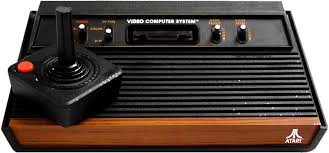

Le jeu vidéo a su séduire toutes les générations en proposant de nouveaux types de divertissement. Le marché des jeux vidéo pèse plus lourd en terme de chiffre d’affaire que les industries du cinéma et de la musique réunis. Je pense qu’il n’y a pas plus parlant que cet exemple étant donné l’importance de ces deux médias dans la culture de notre société.
Depuis quelques années, un marché parallèle des jeux vidéo rétro s’est développé, sous le nez des constructeurs qui tentent aussi de tirer profit de la nostalgie des « gamers ».
Les jeux vidéo devient un objet de collection. Le retrogaming gagne force. Le retrogaming, parfois francisé en rétrogaming, est l'activité qui consiste à jouer à des jeux vidéo anciens et à les collectionner. Il concerne les jeux sortis sur les consoles de jeu, les micro-ordinateurs, les bornes d'arcades ou les jeux dits « électroniques ». D’irréductibles passionnés ou nostalgiques continuent de jouer aux jeux vidéo qui datent des années 1980 jusqu’au début des années 2000.
(Source du text: Link-tothepast)
Une création de Cristiane Garcia
Ce loisir, qui se pratique depuis quelques années, connaît de plus en plus d’adeptes. Selon une étude réalisée en 2018, 49% des joueurs européens interrogés (en France, au Royaume-Uni, en Allemagne et en Espagne) affirment aimer revisiter les anciens jeux qu’ils ont découverts dans leur jeunesse, ou tout simplement découvrir pour les plus jeunes d’entre eux des jeux aux bruitages, aux musiques et aux palettes de couleurs symboles de toute une génération.
En raison de l'histoire encore brève du jeu vidéo, le retrogaming est une activité très récente. Malgré les difficultés de définition, on désigne généralement par jeux vidéo « anciens », les jeux vidéo sortis pendant les quatre premières générations de consoles de jeux, soit depuis le début des années 1970 jusqu'au milieu des années 1990, période où les productions étaient très majoritairement en 2D.
En raison des difficultés à jouer à d'anciens jeux et du développement de l'internet grand public, la pratique des jeux anciens s'est développée sur les PC modernes via la création d'émulateurs d'anciennes plates-formes, et la diffusion de jeux abandonnés. Pour toucher le public des « joueurs nostalgiques », plusieurs éditeurs publient d'anciens jeux à succès sur des machines récentes dans des portages ou des compilations.
